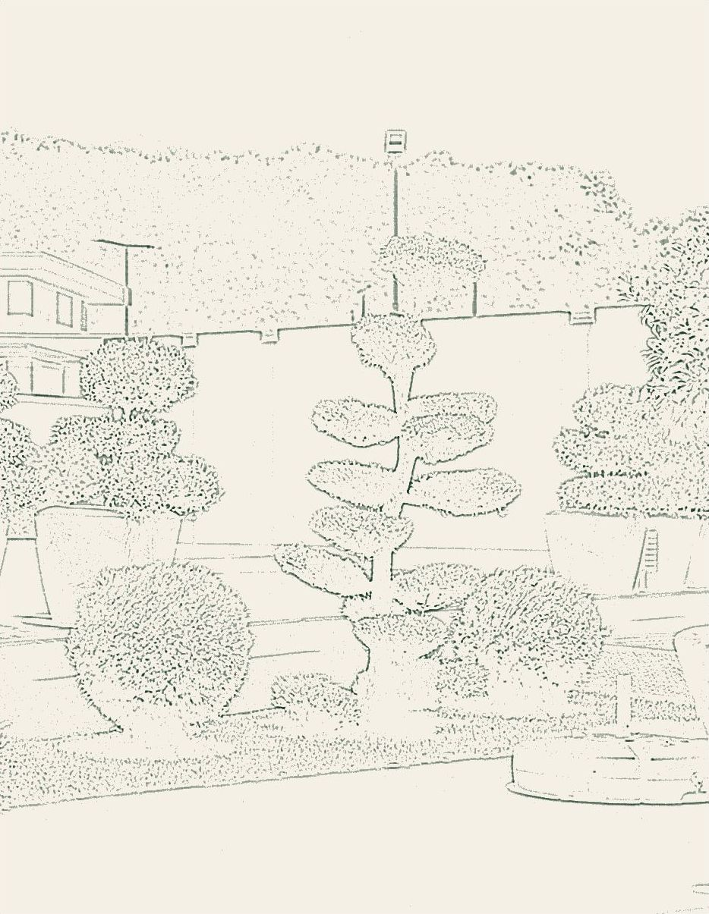
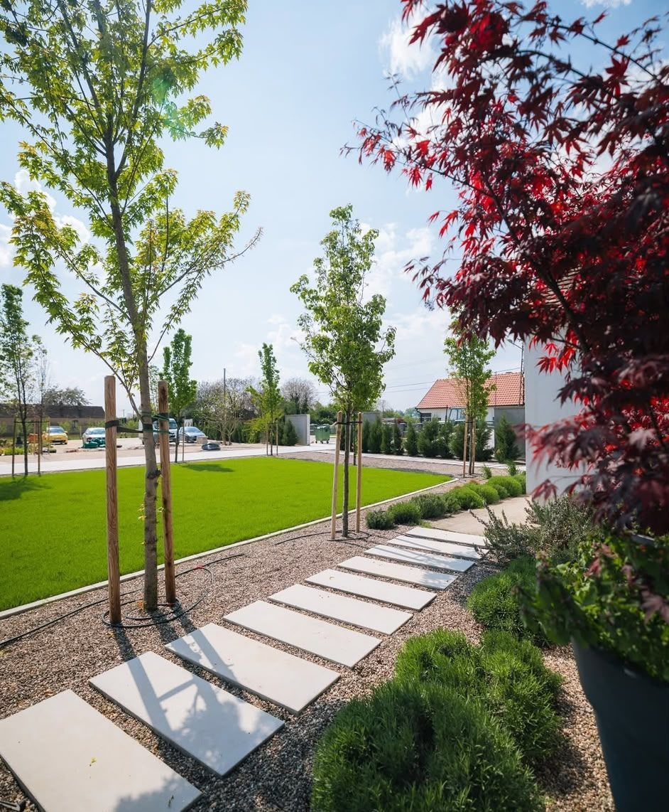
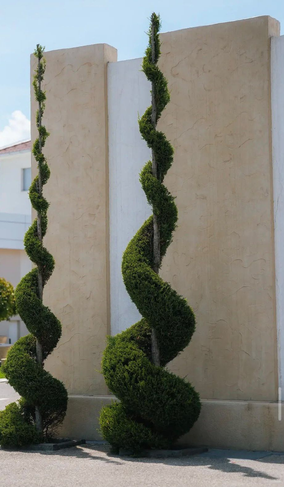
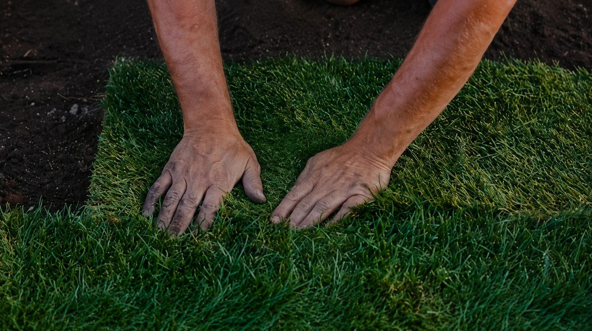
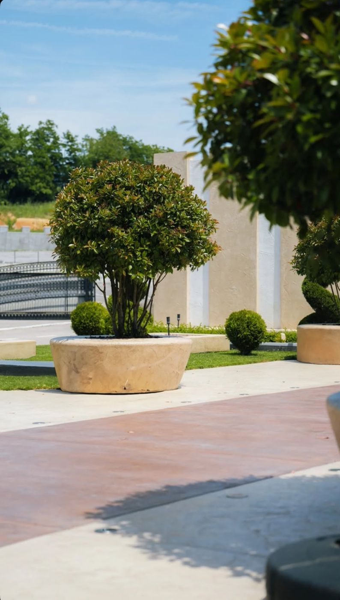
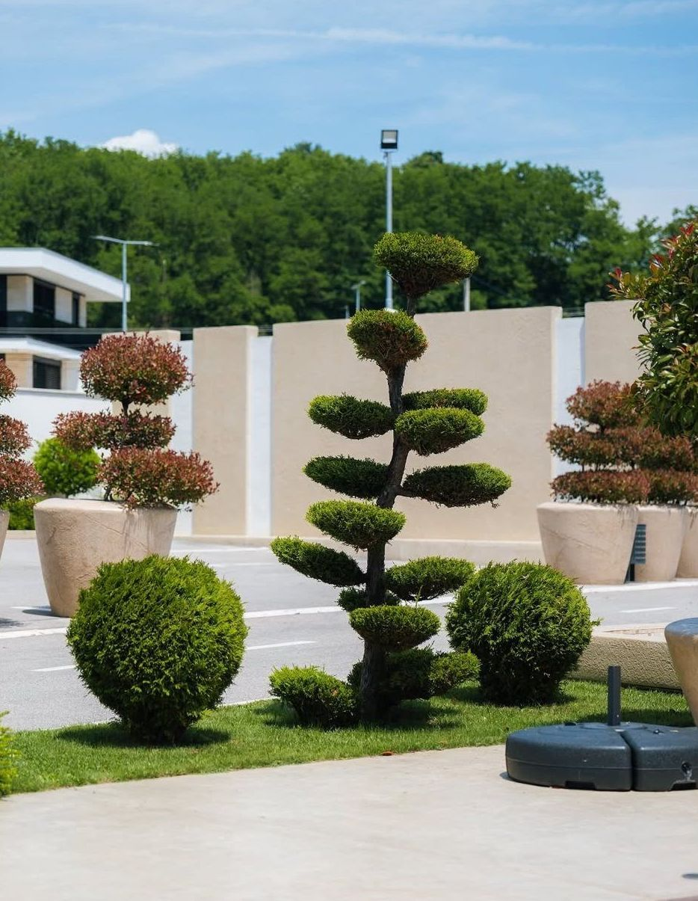
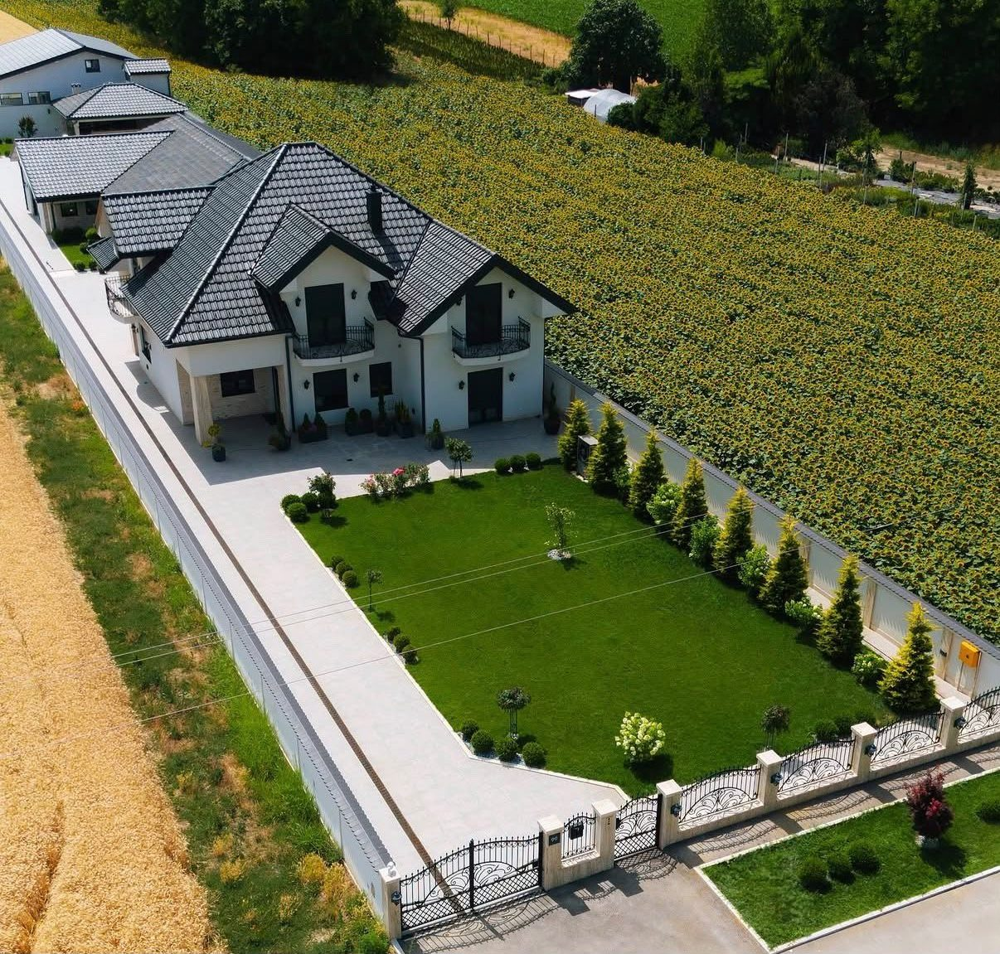
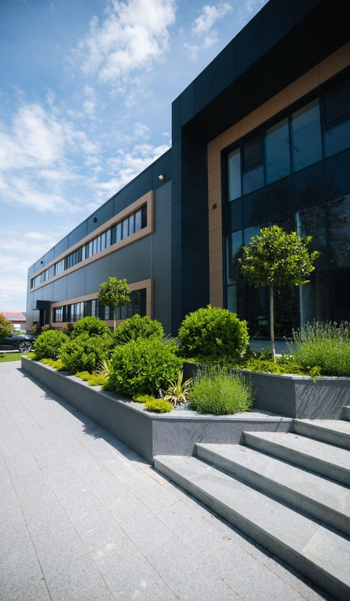
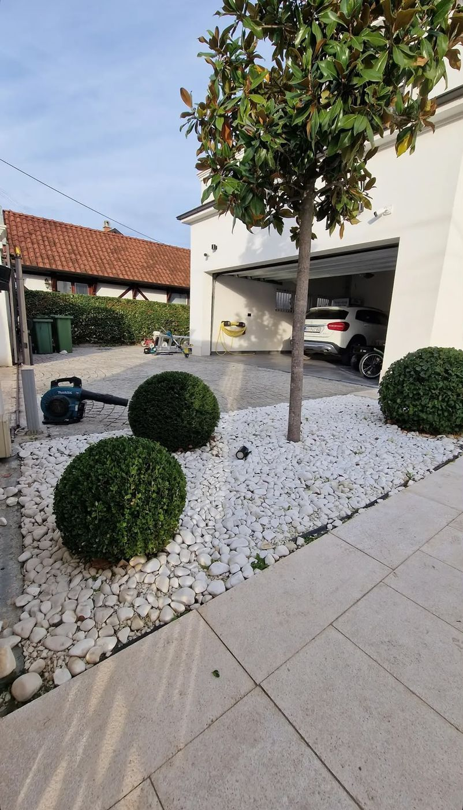
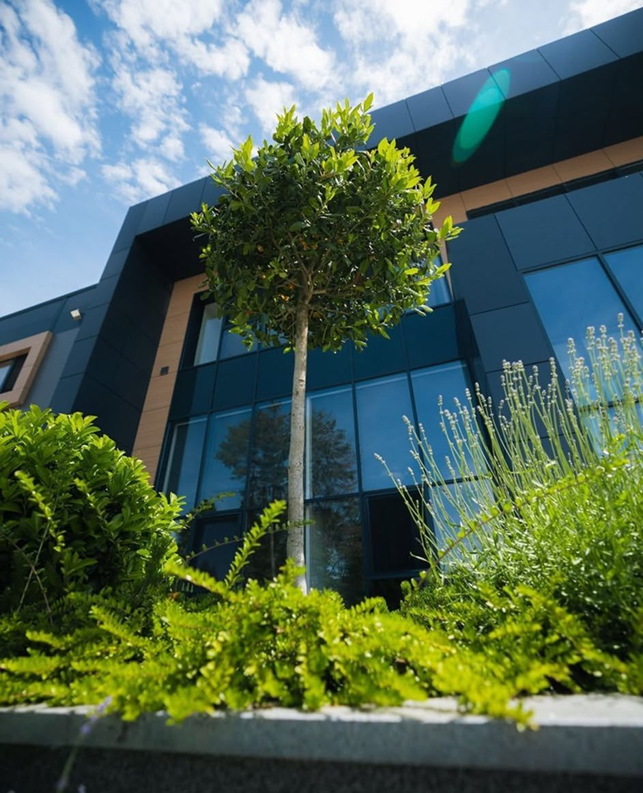

01Projektovanje
Merimo prostor i crtamo raspored.Pre sadnje vrt vidite u 3D-u.
- Snimanje i merenje prostora
- Idejno rešenje i raspored
- Izbor biljaka i materijala
- 3D vizualizacija
Od praznog placa do vrta u kom provodite leto.Crtamo projekat, sadimo i ostajemo uz vrt i posle.


Svaki prostor ima svoju stranu sveta, tlo i pogled.Mi to prvo izmerimo i nacrtamo, pa tek onda sadimo.
Radimo dvorišta kuća i vila, vikendice i poslovne objekte. Isti tim crta projekat, bira biljke, vodi radove i posle održava vrt. Zato ono što vidite na 3D vizualizaciji izgleda isto i u zemlji.
Možete uzeti samo projekat ili ceo posao.Najviše dobijate kad sve ostane u istim rukama.

01Merimo prostor i crtamo raspored.Pre sadnje vrt vidite u 3D-u.

02Pripremamo teren i sadimo.Vodimo radove do poslednje biljke.

03Orezujemo i oblikujemo forme.Vrt raste onako kako je nacrtan.
Pomerajte klizač i pogledajte isti prostor dva puta.Jednom kao skicu, jednom kad je posađen.

SkicaVrtDvorišta, ulazi poslovnih zgrada i forme.Kliknite na fotografiju da je pogledate veću.




Pet koraka, jedan tim.Uvek znate šta je sledeće i koliko košta.
Krenite od prvog korakaPozovete nas ili pošaljete poruku sa par fotografija.Dolazimo na teren, merimo i slušamo kako živite napolju.
Crtamo travnjak, staze, mesta za sedenje i zasade.Menjamo nacrt dok ne bude baš vaš.
Vrt vidite pre prve sadnice.Uz vizualizaciju dobijate ponudu po stavkama.
Pripremamo teren, sadimo i postavljamo busen.Isti ljudi koji su crtali vode i radove.
Po dogovoru dolazimo kroz sezone.Orezujemo forme i čuvamo travnjak.
Ovo su biljke sa naših fotografija.Za vaš vrt biramo prema tlu, svetlu i nezi.
Drži formu godinama i zelen je i zimi. Za kugle, ivice i niske žive ograde.
Uska i gusta, dobra za spirale, stubove i zaklon od pogleda.
Crveni listovi od proleća do jeseni. Akcenat pored staze ili ulaza.
Miriše i privlači pčele. Voli suvo, toplo i sunčano mesto.
Mladi listovi su jarko crveni. Lepo se oblikuje u krošnju na stablu.
Krošnja oblikovana u „oblake". Strpljiv rad koji vrtu daje karakter.
Svaki vrt dobija svoju listu biljaka. Ako želite vrt koji ne traži mnogo rada, biramo vrste kojima ne treba orezivanje svake nedelje.
Dva dvorišta iste površine retko koštaju isto.Cena zavisi od tri stvari.
Terasa, dvorište kuće ili veliko imanje. Površina određuje količinu biljaka i rada.
Staze, nivoi, forme i vrste biljaka. Što više slojeva, više crtanja i rada.
Samo projekat, projekat sa realizacijom, ili sve to plus održavanje.
Znate šta plaćate i šta dobijate, pre nego što krene prva lopata.
Izaberite par odgovora i poruka se sama složi.Pošaljite je SMS-om ili Viberom, ili nas pozovite.
Ono što nas najčešće pitaju.Ako nešto fali, pozovite 064 977 3544.
Pozovite nasPošaljite nam par fotografija prostora.Javićemo se da dogovorimo obilazak.